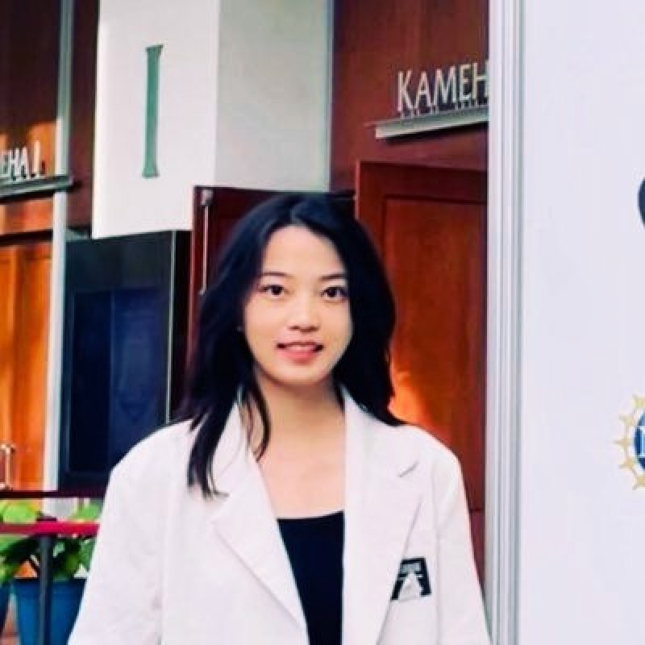

Qinshi (Carol) Zhang
Computer Science Master's Student at UC San Diego
My research interests focus on AI for Social Good and Human-AI Interaction. I design and develop conversational agents leveraging NLP techniques to evaluate and intervene user's environmental attitudes and behaviors.
I work with Prof. Steven Dow at UCSD Design Lab and have collaborated with Dr. Ray LC at HK CityU, resulting in publications at CHI'24 and CHI'25.

Featured Publications
* indicates equal contribution; † indicates corresponding author


News
2025.09
I will attend NeurIPS'25 (Dec 2–7, San Diego Convention Center).
2025.08
Our paper, Frontend Diffusion, has been accepted at VLHCC 25!
2025.01
Our paper, Can AI Prompt Humans, has been fully accepted at CHI 2025!
2024.10
Attending UIST'24, See you in Pittsburgh!
2024.09
Begin my MSCS program at UCSD this fall! See you in San Diego!
2024.06
Starting my internship at UC San Diego Design Lab this July. Excited to contribute to the D4SD 2024 program!